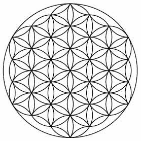

The Flower of Life symbol is a two-dimensional illustration that contains 19 equally proportioned overlapping circles. A school of thought known as Sacred Geometry explains the profound meanings implied by this ancient symbol. The Flower of Life is a geometrical design that consists of 19 circles of the same size that are interconnected. The image looks like a set of equally proportioned flowers. The composition is not only beautiful; it has profound symbolic meanings for our existence, life on Earth, and the formation of the Universe. The Flower of Life is comprised of simpler shapes, or structures. The design starts with a vesica piscis, which is a geometrical shape consisting of two overlapping circles of the same size. Learn More.
